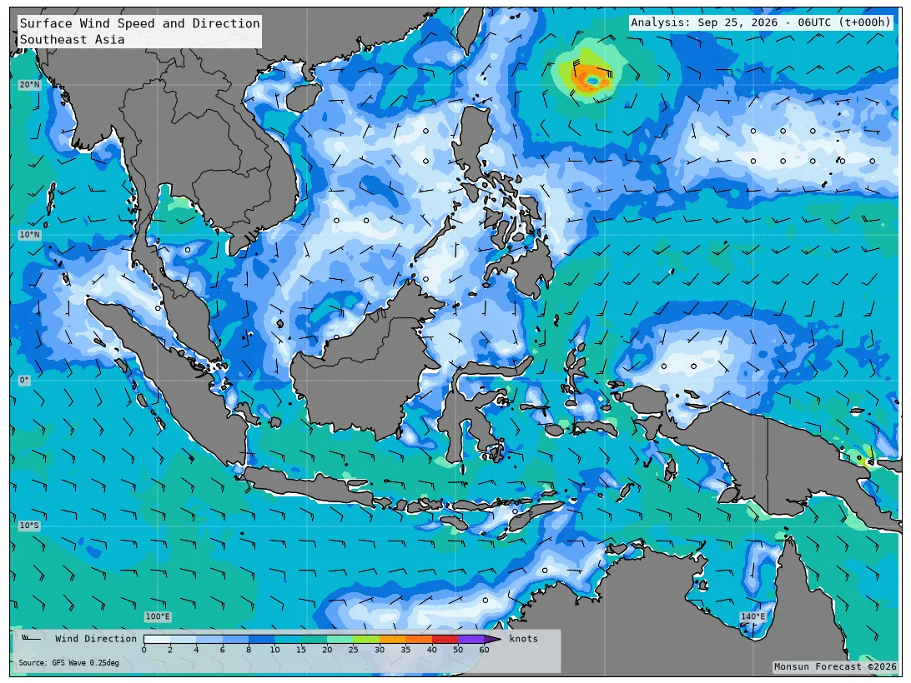

Southeast Asia marine weather
Monsun Forecast
Operational maps and port forecasts from trusted ocean and atmosphere models — built for safer decisions at sea.
Map Forecast

Site Forecast
Point forecasts for major Southeast Asian ports — waves, ocean, weather, and astronomical tide. Click a marker or choose a port.
Click a port marker to open its forecast.
Loading port map…
Route Forecast
Plan a port-to-port passage with time-dependent A* over a land-masked sea grid. The optimizer scores each hop with the wave, wind, and current that leg will actually meet — so departure time and optimize-for mode change the track.
Loading route map…
Speeds come from generic vessel presets, not your ship's polar curve, and the sea grid is a simplified navigable lattice (not ENC fairways). Treat every result as advisory guidance for planning — it is not official voyage routing, and it does not replace ECDIS, notices to mariners, or the master's judgement.
Status
Data update status for Map Forecast sources. Refreshed automatically when the forecast pipeline runs.
Loading status…
FAQs
Short answers about the forecasts, data sources, and how to read the products.
What is Monsun Forecast?
A free marine weather service for Southeast Asia. It turns trusted numerical models into regional maps, port-level charts, and port-to-port route guidance so you can check wind, waves, weather, ocean conditions, astronomical tide, and voyage timing in one place.
What is the difference between Map, Site, and Route Forecast?
Map Forecast shows regional fields (wind, waves, atmosphere, ocean) you can animate through lead times. Site Forecast samples major ports and plots time series for waves & wind, ocean, weather, and hourly astronomical tide. Route Forecast plans a passage between two ports with time-dependent A* over a land-masked sea grid, timed to the wave/wind/current forecast each leg will meet.
Which models power the forecasts?
Maps, port series, and route samples use NOAA GFS Wave, NOAA GFS Atmosphere, and HYCOM for sea temperature and surface currents. Port tide uses astronomical harmonics (FES2022 preferred; GOT4.10 bootstrap until FES is configured).
How far ahead does the forecast go?
The operational window is about 3 days (F000–F072). Wind, waves, and weather are typically 3-hourly; ocean fields are 6-hourly; tide is hourly.
How often is the data updated?
An automated pipeline refreshes maps, site charts, and route samples when new model cycles are available. GFS is treated as fresh within about 18 hours of initial time; HYCOM often lags longer. Open Status for per-dataset cycle age and coverage.
Why can ocean look older than wind or weather?
Each dataset publishes independently. If HYCOM fails on a run, the last complete ocean maps, port ocean series, and route current fields are kept while GFS updates normally—so the site stays usable instead of going blank.
Is the tide the same as observed water level?
No. Site tide is astronomical only (harmonic prediction). It does not include storm surge, river discharge, or residual water level. Use it as tidal timing and range guidance, not as a measured gauge.
What do the direction arrows mean?
On site charts, arrows show where wind and waves propagate toward (meteorological direction is “from”), and where current flows toward. Hover a point for the compass reading.
Which ports are available?
Hai Phong, Ho Chi Minh (Saigon), Laem Chabang, Manila, Port Klang, Singapore, Tanjung Perak (Surabaya), and Tanjung Priok (Jakarta). More ports can be added later.
How does Route Forecast choose a path?
It runs a time-dependent A* over a land-masked sea lattice covering Southeast Asian waters. You pick origin, destination, departure time (UTC), vessel class, and mode (fastest, safest, or balanced). Fastest minimises passage time; safest pays a heavy penalty for rough seas and strong winds; balanced sits between. Edges that exceed the vessel’s wave/wind limits are pruned when possible; otherwise the least severe option is shown with a warning.
Is Route Forecast official voyage routing?
No. Speeds come from generic vessel presets (not your ship’s polar curve), and the sea grid is a simplified navigable lattice (not ENC fairways). Treat every result as advisory planning guidance — it does not replace ECDIS, notices to mariners, or the master’s judgement.
Can I use this for navigation or commercial operations?
Forecasts are for informational purposes and are not official meteorological warnings. The project is licensed CC BY-NC-ND 4.0 (non-commercial, no derivatives). For commercial or derivative use, contact nusawaveintelligence@gmail.com.
Where can I see the source code?
On GitHub. Attribution for model data and libraries is in the repository NOTICE file.
About
Monsun Forecast was created to bring accessible, reliable, and high-quality
marine weather information to everyone navigating the waters of Southeast Asia.
Built from the perspective of operational marine meteorology,
it bridges the gap between complex numerical models and the practical needs of
sailors, fishermen, offshore operators, and coastal communities.
By combining lightweight technology, modern visualization, and
scientifically trusted data, Monsun delivers fast, intuitive forecasts
that empower safer decisions at sea—whether for daily operations or voyage planning.
Forecast maps are derived from NOAA GFS Wave and GFS Atmosphere data and are provided for informational purposes only. Source code is on GitHub and licensed under CC BY-NC-ND 4.0 (non-commercial, no derivatives).
Contact
For business inquiries: nusawaveintelligence@gmail.com